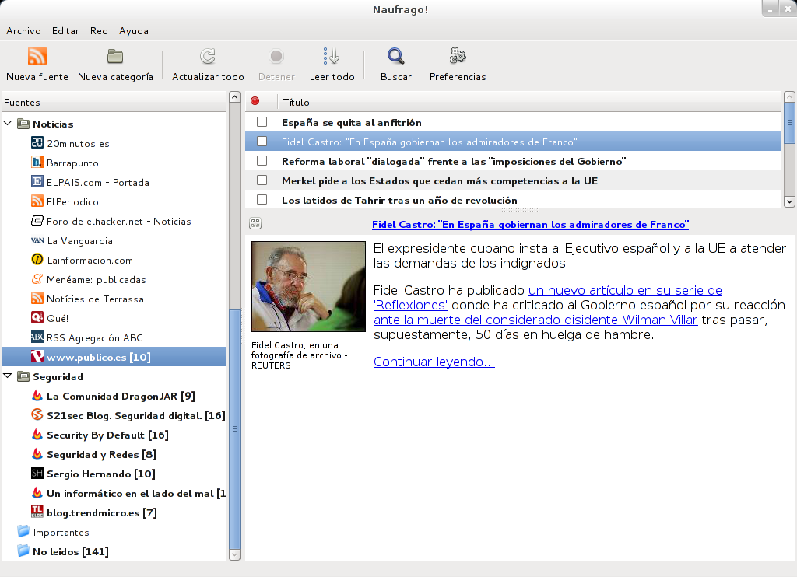
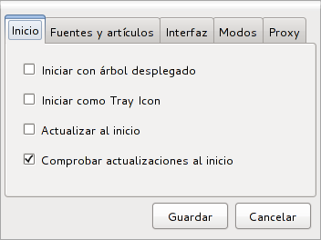
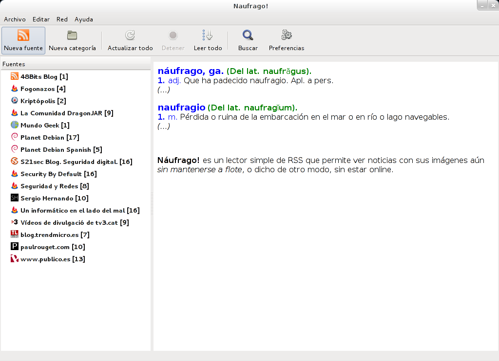
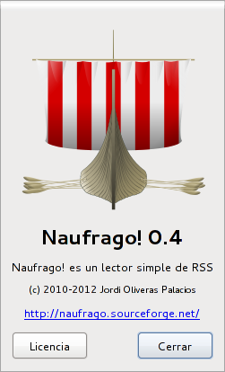

| What's that? |
| Naufrago! is a simple RSS/feed reader that allows reading news with its images even when it's not afloat, or what's the same, without being online. This is because there are people, like the author, that not always has an Internet connection available at a given time, but wants to be able to read articles/entries/posts with its images. This is the leit motiv of the application. |
| Features |
- Feed categorization in a single level tree.
- Feed organization drag & dropping through categories.
- Online/offline feed reading (including images).
- Full screen mode for better feed reading.
- Smart category folding/unfolding.
- Important/permanent feed entry marking (recording).
- Favicon support.
- Tray iconization.
- Feed import/export in OPML format.
- Important and Unread folders.
- Term searching capabilities.
- Multilanguage (currently English, French, Polish, Italian, Catalan and Spanish).
- Automatic update checker.
|
  |
| Reinventing the wheel, why? |
| If the look and functions of this app are nearly a mirror (with some exceptions) of Liferea (at least in aspect), why reinventing the wheel? For many reasons. Mainly because the author could not find a RSS client that worked offline including images, Liferea developers don't admit feature requests (a respectable thing) and taking a look at alien/third party source code requires twice the effort of creating one of my own (warning, this is IMHO!). Reinventing the wheel also helps learning, and it also can add new ways of doing things/features that in other way could not have appeared. |
| Requirements |
- GNU/Linux (Squeeze/stable or greater for the Debian package).
- Python 2.5 or better.
- python-gtk2 (Python gtk2 bindings).
- python-pysqlite2 (Python sqlite3 bindings).
- python-feedparser (Python feedparser bindings).
- python-webkit (Python Webkit bindings).
|
| Screenshots |
| Main window |
| Main window (clear mode) |
| Preferences window |
| Preferences window |
| Downloads |
| Please, go to Naufrago!'s sourceforge project download page. There you can find available both Debian packages and tarballs. Would you like to have a package available for your distro? Collaborate and help us have one! |
| License |
| This app is under the GPLv3. You should have received a copy with it. Otherwise or if you detect a breach of its terms, please contact the author or the FSF. Your freedom is in play! |
| Bugs? |
| If you think you hit one, please, submit a new item at the sourceforge project tracker providing as much relevant information as you can (steps to reproduce, what error was thrown on the console/log, feed url, etc). |
 |